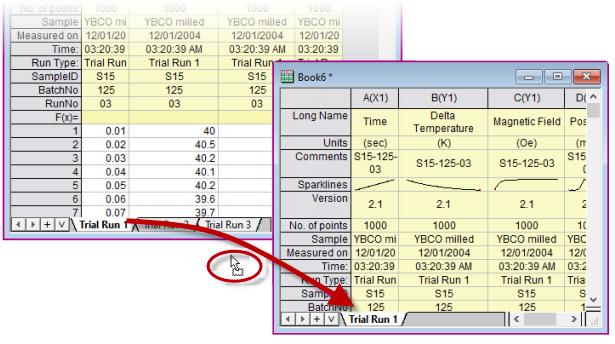
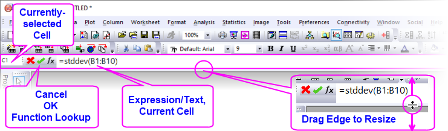

Arbeitsmappen, Arbeitsblätter und Spalten
Worksheets-Columns
Grundlagen zu Arbeitsmappe, Arbeitsblatt und Spalten
Die Origin-Arbeitsmappe ist ein benennbares, verschiebbares, in der Größe veränderbares Fenster, das einen Rahmen zum Importieren, Organisieren, Analysieren, Transformieren, Zeichnen und Präsentieren Ihrer Daten zur Verfügung stellt. Beschränkungen, Arbeitsmappe
- Jede Arbeitsmappe besteht aus einer Sammlung von einem oder mehreren Arbeitsblättern (bis zu 1024).
- Jedes Arbeitsblatt enthält eine Reihe von Spalten (bis zu 65.500). Jede Spalte enthält Zeilen von Zellen (bis zu 90.000.000).
- Jede Spalte hat einen Kurznamen (z. B. "A"), der sie eindeutig innerhalb des Arbeitsblatt identifiziert und eine Spaltenzuordnung (z. B. "(X)", die bestimmt, wie mit ihr per Standard in Zeichen- und Analyseoperationen umgegangen wird.
- Jedes Arbeitsblatt und jede Arbeitsblattspalte verfügt über Zellen, die Daten enthalten und über die Zeilen(index)nummer identifiziert werden, und einen vorangestellten Bereich mit Metadaten ("Header"), der sich aus optionalen Beschriftungszeilen, einschließlich Langname, Einheiten, Kommentare etc. zusammensetzt.
Grenzen von Arbeitsmappe, Arbeitsblatt und Spalten
Beschränkungen, Arbeitsmappe
| Objekt |
Maximale Anzahl |
|
Arbeitsblätter in einer Arbeitsmappe
Zeilen in einem Arbeitsblatt, 1 Spalte
Zeilen in einem Arbeitsblatt, 5 Spalten
Zeilen in einem Arbeitsblatt, 32 Spalten
Spalten in einem Arbeitsblatt, 1 Zeile
Spalten in einem Arbeitsblatt, 100 Zeilen
Spalten in einem Arbeitsblatt, 1000 Zeilen
|
1024†
90,000,000
90,000,000
90,000,000
65,500
65,500
65,500
|
† > 255 Blätter erfordern das Speichern der Datei in einem mit Unicode kompatiblen Dateiformat (z. B. *.opju). Unicode-Formate sind nicht mit Origin-Versionen vor Origin 2018 kompatibel.
Arbeitsmappen, Arbeitsblätter und Spalten benennen
Arbeitsmappen, BenennenArbeitsmappen benennenArbeitsblätter, BenennenArbeitsblätter benennenSpalten, BenennenSpalten benennen
| Arbeitsmappen |
- Eine Arbeitsmappe hat einen Kurznamen und, optional, einen Langnamen und Kommentare. Origin verwendet den Kurznamen für interne Operationen.
- Kurznamen müssen innerhalb der Projektdatei einzigartig sein, können nur alphanumerische Zeichen (Buchstaben oder Zahlen) enthalten, müssen mit einem Buchstaben beginnen und sind auf 13 Zeichen beschränkt.
- Der Langname einer Arbeitsmappe ist optional, muss innerhalb einer Projektdatei nicht einzigartig sein, kann jedes Zeichen in beliebiger Reihenfolge verwenden und ist auf bis zu 5.506 Zeichen beschränkt (einschließlich Leerzeichen).
- Um eine Arbeitsmappe zu benennen, klicken Sie mit der rechten Maustaste auf die Titelleiste der Arbeitsmappe und wählen Sie Eigenschaften. Hier können Sie Langname, Kurzname und Kommentare bearbeiten. Verwenden Sie die Auswahlliste Fenstertitel, um zu steuern, welche Namen auf der Fenstertitelleiste gezeigt werden.
|
| Arbeitsblätter |
- Ein Arbeitsblatt hat einen Namen und optional eine Beschriftung und Kommentare.
- Der Name muss innerhalb einer Arbeitsmappe einzigartig sein.
- Der Name eines Arbeitsblatts ist auf 64 Zeichen beschränkt, einschließlich Leerzeichen. Diese Sonderzeichen sind nicht zugelassen: {}|"<>()![].
- Beschriftung und Kommentar für das Arbeitsblatt sind optional. Sie müssen nicht einzigartig innerhalb der Projektdatei sein, können Zeichen in beliebiger Reihenfolge verwenden und jede praktische Länge besitzen.
- Um ein Arbeitsblatt zu benennen, klicken Sie doppelt auf den Reiter. Klicken Sie dann mit der rechten Maustaste auf den Reiter und wählen Sie Name und Kommentare. Weitere Einzelheiten werden unten unter Arbeitsblätter aufgeführt.
|
| Spalten |
- Eine Spalte hat einen Kurznamen und einen optionalen Langnamen.
- Der Kurzname muss in einem Arbeitsblatt einzigartig sein. Wenn die vereinfachte Zellennotation aktiviert ist (Standardeinstellung), können Sie den Spaltenkurznamen nicht bearbeiten (siehe Einschränkung der Spaltenkurznamen). Wenn die Zellennotation deaktiviert ist, können Sie den Spaltenkurznamen bearbeiten. Beim Bearbeiten von Kurznamen müssen Sie beachten, dass sie nur alphanumerische Zeichen verwenden (keine Sonderzeichen), mit einem Buchstaben oder einer Zahl beginnen und auf 18 Zeichen beschränkt sind.
- Der Langname einer Arbeitsmappenspalte ist optional, muss innerhalb einer Projektdatei nicht einzigartig sein, kann jedes Zeichen in beliebiger Reihenfolge verwenden und ist auf bis zu 30.000 Zeichen beschränkt (einschließlich Leerzeichen). Der Langname kann direkt durch Klicken auf die Zelle Langname oder durch Rechtsklick auf den Spaltenheader und Wählen von Einstellungen im Kontextmenü bearbeitet werden.
- Referenzen von Dialogen und Statusbalken auf einen Datenbereich verwenden den Langnamen, vorausgesetzt, dass (1) ein Langname existiert und (2) Sie die Funktion Langnamen verwenden, wenn verfügbar (Einstellungen: Optionen: Sonstiges) aktiviert haben. Ansonsten werden Kurznamen verwendet.
|
Arbeitsmappen
Origin-Arbeitsmappen können in hohem Maß benutzerdefiniert angepasst werden und mit Daten (z. B. Arbeitsmappendatei) oder ohne Daten (z. B. Arbeitsmappenvorlage) gespeichert werden. Da sie für viele unterschiedliche Anwendungen konfiguriert werden können, besteht eine hohe Wahrscheinlichkeit, dass Sie mit der Zeit eine Anzahl von benutzerdefinierten Dateien ansammeln werden. Der Dialog Neue Mappe dient zum Organisieren und Auswählen dieser Dateien.
Neue Mappe und Mappenvorlagen
Um den Dialog Neue Mappe zu öffnen:
- Klicken Sie auf Datei: Neu: Arbeitsmappe: Durchsuchen oder drücken Sie Strg + N.
 | Eine Schaltfläche Vorlagencenter öffnen  wurde zum Dialog Neue Mappe hinzugefügt. Klicken Sie auf die Schaltfläche, um zusätzliche Arbeitsmappenvorlagen zu durchsuchen, die Sie herunterladen und zu Ihrer Vorlagenliste hinzufügen können. wurde zum Dialog Neue Mappe hinzugefügt. Klicken Sie auf die Schaltfläche, um zusätzliche Arbeitsmappenvorlagen zu durchsuchen, die Sie herunterladen und zu Ihrer Vorlagenliste hinzufügen können. |
- Der Dialog listet sowohl Addon-Dateien (Erweitert) und benutzerdefinierte Dateien (Anwender) auf.
- Dateien können nach Name, Mappentyp, Kategorie oder Speicherort sortiert werden.
- Wenn Sie mit der Maus über das Symbol fahren, wird eine Dateivorschau angezeigt.
- Klicken Sie mit der rechten Maustaste auf einen Vorlagennamen und bearbeiten Sie die Metadaten oder setzen Sie als Standard (z. B. Schaltfläche Neue Arbeitsmappe
 ). Über Rechtsklick können Sie auch den Standard löschen.
). Über Rechtsklick können Sie auch den Standard löschen.
- Aktivieren Sie Im Menü zeigen, um ein Fenster in den Menüs Neu: Arbeitsmappe oder Neu: Matrix zu listen.
- Filtern Sie Fenster nach Kategorie über das Menü "Alle Kategorien".
- Filtern Sie Fenster nach Typ über das Auswahlmenü Mappentyp. Mit Zurücksetzen werden alle gezeigt.
- Klicken Sie mit der rechten Maustaste auf eine Vorlage, um Als Standard (zu) setzen oder Metadaten zu bearbeiten.
- Aktivieren/deaktivieren Sie Bei Start und neuem Projekt zeigen.
| Der Dialog Eigenschaften jedes Fensters enthält ein Feld Kommentare für die Eingabe von Text. Diese Kommentare sind in den Vorschauen des Dialogs Neue Mappe und den Vorschauen des Projekt Explorers enthalten. Außerdem können Kommentare über das Hilfsmittel Bearbeiten: In Projekt suchen gesucht werden. |
Vereinfachte Zellennotation (SCN)
Origin-Arbeitsmappen unterstützen die vereinfachte Zellennotation (SCN). Die Vereinfachte Zellennotation (SCN) unterstützt die Art von Berechnungen auf Zellenebene, mit der Anwender von Tabellenkalkulationsblättern vertraut sind (weitere Einzelheiten unten).
- Die SCN ist für alle neuen Arbeitsmappen per Standard eingeschaltet.
- In Origin 2017 - 2019 konnten Sie dieses Symbol
 in der oberen linken Ecke des Arbeitsblatts sehen, wenn die vereinfachte Zellennotation (SCN) eingeschaltet war.
in der oberen linken Ecke des Arbeitsblatts sehen, wenn die vereinfachte Zellennotation (SCN) eingeschaltet war.
- Seit Origin 2019b ist das SCN-Symbol verborgen (Standard), die vereinfachte Zellennotaton bleibt aber aktiviert (auch Standard), um Platz für das Symbol des Datenkonnektors im Arbeitsmappenfenster zu schaffen.
- Die meisten Anwender möchten die SCN außer in seltenen Fällen aktiviert lassen (z. B. wenn Sie den Spaltenkurznamen benutzerdefiniert anpassen müssen. In diese Fällen können Sie die SCN ausschalten. Um die SCN zu deaktivieren, klicken Sie mit der rechten Maustaste auf die Titelleiste der Arbeitsmappe und wählen Sie Eigenschaften. Das Kontrollkästchen für die Zellennotation für Tabellenkalkulationsblätter befindet sich etwa auf halber Höhe der Seite.
- Wenn die SCN ausgeschaltet ist, sehen Anwender allerVersionen dieses Symbol
 in der oberen linken Ecke der Arbeitsmappe.
in der oberen linken Ecke der Arbeitsmappe.
- Wenn Sie ein Projekt oder Arbeitsmappenfenster in Origin öffnen und die SCN ist in einer bestimmten Arbeitsmappe ausgeschaltet, wird die Schaltfläche SCN in der unteren linken Ecke angezeigt. Dies umfasst die Projekte bzw. Arbeitsmappe, die vor Origin 2017 erstellt wurden. Um die SCN zu aktivieren, klicken Sie mit der rechten Maustaste auf die Titelleiste der Mappe, wählen Sie Eigenschaften und aktivieren Sie das Kontrollkästchen Zellennotation für Tabellenkalkulationsblätter.
Welche Datentypen können in der Arbeitsmappe gespeichert werden?
Die Arbeitsmappe dient als ein flexibler Behälter für alle Ihre arbeitsrelevanten Daten -- nicht nur Text- und numerische Daten. Sie können Diagramme, Matrizen, Bilder, Notizen hinzufügen, Berechnungen, Skripte, Variablen, Textobjekte und programmierbare Schaltflächen speichern und Live-Links zu anderen Projektdaten erstellen. Über ihre Rolle als flexibler Datenbehälter hinaus dient die Arbeitsmappe auch als ein Medium für die Stapelanalyse und das Reporting.
Diese Tabelle fasst die Arten von Objekten zusammen, die im Arbeitsmappenfenster auf Ebene von Arbeitsmappe, Arbeitsblatt und Arbeitsblattzelle gespeichert werden können, und wie auf sie zugegriffen werden kann.
Arbeitsblätter
Eine Arbeitsmappe kann bis zu 1.024 Blätter umfassen. Ein Blatt hat einen einzelnen Namen, der Leerzeichen und Sonderzeichen enthalten kann. Optional können Sie eine Beschriftung und/oder einen Kommentar hinzufügen.
- Klicken Sie doppelt auf den Blattreiter und geben Sie einen Namen ein. Alternativ klicken Sie mit der rechten Maustaste auf den Blattreiter, wählen Name und Kommentare und bearbeiten das Feld Name.
Die Systemvariable @SSL kann verwendet werden, um das Verhalten der Namensvergabe von Blättern zu modifizieren. Um mehr zu erfahren, suchen Sie nach @SSL in der Liste der LabTalk-Systemvariablen.
| Wenn Sie mit der Maus über den Arbeitsblattreiter fahren, wird Name, Beschriftung und Kommentare als Tooltipp angezeigt. |
- Einfügen Fügt ein einzelnes Arbeitsblatt vor das aktive Arbeitsblatt ein.
- Hinzufügen Hängt ein einzelnes Arbeitsblatt an.
- Duplizieren ohne Daten Dupliziert das aktive Arbeitsblatt, ohne die Daten zu kopieren.
- Duplizieren Dupliziert das aktive Arbeitsblatt, einschließlich die Daten.
Jedes Arbeitsblatt in einer Arbeitsmappe kann über seine eigene Einstellungen von benutzerdefinierten Anpassungen verfügen. Wenn Sie ein Arbeitsblatt einfügen oder hinzufügen, basiert das neue Blatt auf der Datei ORIGIN.otwu, insbesondere der Version von ORIGIN.otwu in Ihrem Anwenderdateiordner, sollten Sie diese Datei benutzerdefiniert angepasst haben. Falls Sie ein Blatt einfügen möchten, das auf einem anderen Blatt dieser Arbeitsmappe basiert (einschließlich der Anzahl der Spalten und der speziellen Formatierung), verwenden Sie den Kontextmenübefehl Duplizieren oder Duplizieren ohne Daten.
Sie können auch (a) existierende Blätter zwischen Mappen ziehen oder (b) Blätter per Drag&Drop auf eine leeren Bereich des Arbeitsbereichs ziehen, um eine neue Mappe zu erstellen.
- 
Zum Auswählen mehrerer Blätter wenn Sie die Blätter zwischen Mappen ziehen oder wenn Sie Blätter auf den Arbeitsbereich ziehen, um neue Mappen zu erstellen:
- Drücken Sie Shift/Strg auf mehreren Arbeitsblattreitern und ziehen Sie die ausgewählten Reiter dann auf ein anderes Fenster oder einen leeren Bereich des Arbeitsbereichs.
oder ...
- Klicken Sie mit der rechten Maustaste auf den Arbeitsblattreiter und wählen Sie Navigieren. Drücken Sie Strg/Shift im Dialog In Arbeitsblättern navigieren und wählen Sie Blätter aus, klicken Sie dann mit der rechten Maustaste und wählen Sie Verschieben zu, dann Neue Mappe oder Ausgewählte Mappe.
Arbeitsblatteigenschaften
- Klicken Sie mit der rechten Maustaste in die graue Fläche rechts neben das Arbeitsblattgitternetz (aber innerhalb des Arbeitsmappenfensters) und wählen Sie Einstellungen.
Sie können den Dialog Arbeitsblatteigenschaften verwenden, um Eigenschaften des Blatts benutzerdefiniert anzupassen, einschließlich...
- Anzeige der Zeilenbeschriftungen, Headerbeschriftungen und Gitternetzlinien (Registerkarte Ansicht)
- Die Anzahl der Zeilen und Spalten und weitere Blattdimensionen wie Spalten- oder Zeilenkopfhöhe (Registerkarte Größe)
- Aktivieren von RichText, Textumbruch, Anzeige von gekürztem Zelleninhalt, Blattschriftart und -farbe (Registerkarte Format)
- Autom. Hinzufügen von Zeilen, Ignorieren von verborgenen Zeilen beim Zeichnen und Analysieren, Ändern der Zellengröße (Registerkarte Verschiedenes)
- Drucken/Exportieren der Gitternetzlinien, Kopfzeilen und Fußzeilen, Hintergrundfarbe (Registerkarte Druck/Export)
- Nach dem Import bzw. bei Datenänderung auszuführendes Skript (Registerkarte Skript)
- Anzeige und Bearbeitung eines Anwenderbaums (z. B. fügt der Anwender Konfigurationsinfos zur Verwendung in der Vorlage hinzu) (Registerkarte Anwenderbaum).
Beachten Sie, dass viele der Blattanpassungen auf Zellenebene angewendet werden können, indem mit der rechten Maustaste auf eine ausgewählte Zelle geklickt und Zellen formatieren gewählt wird.
Weitere Informationen finden Sie unter: Der Dialog Arbeitsblatteigenschaften.
Blätter mit der Objektverwaltung bearbeiten
Verwenden Sie die Befehle des Kontextmenüs der Objektverwaltung, um die Anzeige des Arbeitsmappeninhalts zu bearbeiten:
- Es werden alle Blätter in der aktiven Arbeitsmappe aufgelistet.
- Klicken Sie auf ein Blatt in der Objektverwaltung, um das entsprechende Blatt in der Arbeitsmappe zu aktivieren.
- Klicken Sie mit der rechten Maustaste in die Objektverwaltung, um Zugriff auf die gängigen Arbeitsblattoperationen zu erhalten, einschließlich Löschen, Einfügen, Hinzufügen, Verschieben, Kopieren und Umbenennen.

Blätter verbergen/zeigen
Sie können Arbeitsblätter mit Hilfe der Objektverwaltung verbergen (und zeigen).
- Wählen Sie in der Objektverwaltung eine oder mehrere Arbeitsblätter.
- Klicken Sie mit der rechten Maustaste und wählen Sie Verbergen. Verborgene Blätter werden in der Objektverwaltung abgeblendet und in der Arbeitsmappe verborgen.
- Um das Blatt bzw. die Blätter zu zeigen, klicken Sie mit der rechten Maustaste auf die abgeblendeten Blätter und wählen Sie Zeigen.
- Beachten Sie, dass Sie mit der rechten Maustaste auf einen oder mehrere Arbeitsblattreiter klicken und Verbergen/Zeigen wählen können.
- Es gibt zusätzlich einen Kontextmenübefehl Navigieren, verfügbar in den Menüs von Blattreiter und Objektverwaltung, der den Dialog In Arbeitsblättern navigieren öffnet. Sie können Blätter verbergen oder zeigen, indem Sie die Kontrollkästchen Zeigen in diesem Dialog deaktivieren oder aktivieren.
- Eine andere Möglichkeit, Blätter zu zeigen, besteht über den Mappenorganizer:
- Klicken Sie mit der rechten Maustaste in die graue Fläche rechts von der letzten Arbeitsblattspalte und wählen Sie Zeige Organizer.
- Im unteren linken Bedienfeld werden verborgene Blätter abgeblendet. Klicken Sie doppelt auf das abgeblendete Blatt, um es zu zeigen.
Arbeitsblattansichten: Bereiche fixieren und Fixierung aufheben
Origin verfügt über zwei Optionen zum Sperren der Ansicht von einem Teil des Arbeitsblatts, während Sie durch das restliche Blatt scrollen können. Die beiden Optionen können in einigen Situationen beide gleichwertig verwendet.
Arbeitsblätter mit Hilfe von Trennelementen in Felder aufteilen
Dies positioniert eine bewegliche, vertikale oder horizontale Trennlinie bei der ausgewählten Zeile oder Spalte. Bei Auswahl einer einzelnen Zelle kann es auch beides sein, eine vertikale und eine horizontale Trennlinie. Das Arbeitsblatt wird in identische und scrollbare Ansichten des Bereichs der Arbeitsblattsdaten aufgeteilt. Die Anwender kann innerhalb von jedem Feld scrollen, während die Zeilen oder Spalten in den anderen Feldern sichtbar bleiben.
- Wählen Sie eine Arbeitsblattzeile/-spalte oder eine einzelne Zelle und wählen Sie Fenster: Aufteilen.
- Um die Aufteilung zu entfernen, wählen Sie Fenster: Aufteilung entfernen.
Zeilen und Spalten im Arbeitsblatt fixieren
Anwender können die ersten 1 bis 10 Zeilen und/oder Spalten im Arbeitsblatt fixieren und sie auf diese Weise in der Ansicht "sperren", während es möglich ist, durch die restlichen Zeilen bzw. Spalten zu scrollen. Gesperrte Zeilen- und Spaltenheader werden in einer dunkleren Farbe schattiert, um die Fixierung zu kennzeichnen.
- Markieren Sie eine Zeile oder Spalte oder eine einzelne Zelle zwischen Indexzeile/-spalte = 1 und 10 und tun SIe dann Folgendes:
- Wählen Sie Ansicht: Bereich fixieren/Fixierung aufheben.
- Drücken Sie Strg + Shift + F.
- Wählen Sie eine Zeile/Spalte oder eine einzelne Zelle und klicken Sie auf die Schaltfläche Bereich fixieren der Minisymbolleiste.
- Klicken Sie auf die am weitesten oben links stehende Zelle im Blatt und klicken Sie auf die Schaltfläche Fixierung aufheben.

Arbeitsblattspalten
- Um eine neue Spalte am rechten Ende eines bestehenden Arbeitsblatts hinzuzufügen, klicken Sie mit der rechten Maustaste in die graue Fläche auf der rechten Seite der Arbeitsblattspalten und wählen Sie Neue Spalte oder klicken Sie auf die Schaltfläche Neue Spalten anhängen
 auf der Symbolleiste Standard.
auf der Symbolleiste Standard.
- Um mehrere Spalten zum Arbeitsblatt hinzuzufügen, aktivieren Sie das Arbeitsblatt und wählen Sie dann Spalte: Spalten hinzufügen im Hauptmenü. Legen Sie die Anzahl der hinzuzufügenden Spalten im Dialog Neue Spalten hinzufügen fest und klicken Sie auf OK oder wählen Sie Format: Worksheet im Menü bzw. verwenden Sie die Taste F4, um den Dialog Arbeitsblatteigenschaften zu öffnen. Legen Sie dann den gewünschten Wert für die Spaltenanzahl auf der Registerkarte Größe fest.
- Um eine Spalte in das Arbeitsblatt einzufügen, markieren Sie eine Spalte, klicken Sie mit der rechten Maustaste und wählen Sie Einfügen. Eine Spalte wird vor der markierten Spalte eingefügt und die Spaltenkurznamen werden entsprechend angepasst.
Es gibt verschiedenen Möglichkeiten, um Arbeitsblattspalten umzubenennen:
- Klicken Sie doppelt auf den Spaltenkopf, um den Dialog Spalteneigenschaften zu öffnen. Geben Sie einen Kurznamen und/oder Langnamen ein bzw. bearbeiten Sie ihn.
- Geben Sie einen Langnamen direkt in die Arbeitsblattkopfzelle eingeben, indem Sie doppelt auf die Zelle klicken.
- Importieren Sie eine Datendatei und legen Sie fest, dass Arbeitsmappen, Arbeitsblätter und Spalten beim Importieren benannt werden.
- Verwenden Sie die Registerkarte Beschriftungen nummerieren des Dialogs Arbeitsblatteigenschaften, um Spaltennamen und Beschriftungen zu nummerieren und zu duplizieren.
- Geben Sie die gewünschten Namen in ein paar Spalten ein, wie z.B. Peak 1 und Peak 2, markieren Sie dann die Zellen und ziehen Sie an der rechten, unteren Ecke der Auswahl, um die Namen für die anderen Spalten automatisch zu füllen und zu nummerieren. Dies funktioniert auch für andere Kopfzeilen wie Kommentare.
Regeln zur Namensgebung von Arbeitsblattspalten finden Sie in der obenstehenden Tabelle.
Spaltenzuordnungen
Wie erwähnt, bestimmen die Spaltenzuordnungen (alias "Diagrammzuordnungen") des Arbeitsblatts im Allgemeinen, wie Daten während der Analyse- und Zeichenoperationen verarbeitet werden. Sie wählen zum Beispiel eine X-Spalte + drei Y-Spalten aus, um eine gleichzeitige lineare Anpassung von jedem Y-Datensatz gegen einen gemeinsamen Satz von X-Werten durchzuführen. Oder Sie wählen die gleichen Spalten aus, um 3 Liniendiagramme gegen einen gemeinsamen Satz von X-Werten zu zeichnen. Zusätzlich gibt es Zuordnungen für Z-Werte, für Fehlerdaten, für Beschriftungen etc. (Weitere Informationen finden Sie unter Spaltenzuordnung festlegen in der Origin-Hilfe).

Es gibt eine Reihe von Optionen in der Bedienoberfläche, Spalten während einiger Analyse- und Zeichenoperationen zuzuweisen. Am einfachsten können Sie die Zuordnung im Arbeitsblatt vornehmen, indem Sie (1) auf den Spaltenheader klicken, um eine Spalte zu markieren, und dann (2) eines der beiden folgenden Dinge tun:
- Wählen Sie eine Option in der Minisymbolleiste auf Spaltenebene.
- Klicken Sie auf eine Schaltfläche auf der Symbolleiste Spalte.
- Klicken Sie mit der rechten Maustaste auf die Spalte und wählen Sie eine Option im Kontextmenü eine Setzen als.
- Klicken Sie mit der rechten Maustaste auf die Spalte, wählen Sie Einstellungen und legen Sie die Diagrammzuordnung fest.
Der Dialog Spalteneigenschaften
Eigenschaften von Arbeitsblatteigenschaften Der Dialog Spalteneigenschaften wird verwendet, um Eigenschaften der Spalte benutzerdefiniert anzupassen, einschließlich...
- Klicken Sie doppelt auf den Spaltenkopf.
- Klicken Sie mit der rechten Maustaste auf die ausgewählte Spalte(n) und wählen Sie Einstellungen.
Verwenden Sie die Registerkarte Eigenschaften, um die Spalte Kurzname ggf. zu bearbeiten. Weitere Eigenschaften -- Langname, Einheiten und Kommentare -- können hier bearbeitet oder direkt in die Zellen der entsprechenden Spaltenbeschriftungszeile eingegeben werden.
Spaltendaten formatieren
Daten im Origin-Arbeitsblatt werden entweder als Text- oder numerische Daten betrachtet. Während die Anzeige von Textdaten im Arbeitsblatt recht unkompliziert ist, ist die Anzeige der numerischen Daten komplizierter.
Wenn nicht anders angegeben, werden alle Zahlen im Arbeitsblatt intern als frei beweglicher Punkt, Zahlen mit doppelter Präzision (Double(8)) gespeichert. Dies schließt Datums- und Zeitangaben mit ein, Daten, die so formatiert sind, dass sie in Grad-Minuten-Sekunden angezeigt werden, oder Zahlen, die so formatiert sind, dass sie eine feste Anzahl von Dezimalstellen anzeigen.
Beim Umgang mit numerischen Daten ist es wichtig zu beachten, dass das, was Sie im Arbeitsblatt sehen, die Darstellung einer Zahl ist, die intern gespeichert ist. Dies ist aus zwei Gründen wichtig:
- Berechnungen, die Arbeitsblattwerte berücksichtigen, werden immer mit der intern gespeicherten Zahl mit doppelter Präzision durchgeführt, nicht mit dem Wert, der im Arbeitsblatt angezeigt wird.
- Sie können verschiedene Optionen für Format und Anzeige anwenden, um die Art und Weise der Anzeige dieser gespeicherten Zahl im Arbeitsblatt zu ändern.
| Auch wenn die zentrale Stelle zum Formatieren der Arbeitsblattdaten der Dialog Eigenschaften ist, wie oben beschrieben, denken Sie daran, dass Sie über die Schaltflächen der Minisymbolleiste die Anzeige von numerischen und Datums-/Zeitdaten schnell ändern können. Beachten Sie, dass das Format der ausgewählten Spalten zuerst als Datum oder Numerisch/Text & Numerisch festgelegt werden muss, damit diese Schaltflächen sichtbar sind.
|
Numerische Anzeigeformate
- Klicken Sie doppelt auf die Spaltenüberschrift, um den Dialog Spalteneigenschaften zu öffnen.
- Klicken Sie auf die Registerkarte Einstellungen und setzen Sie dann Format = Numerisch.
- Setzen Sie Anzeige auf Dezimal: 1000, Wissenschaftlich: 1E3, Technisch: 1K, Dezimal: 1,000 oder Benutzerdefiniert (siehe unten).
Datums- und Zeitformate
Standardmäßig speichert Origin die Datums-/Zeitdaten als einen modifizierten Julianischen Tageswert und verwendet diese Zahl für Berechnungen von Datum/Zeit. Üblicherweise werden Sie es jedoch vorziehen, diesen Julianischen Tageswert in einem aussagekräftigeren Datums-/Zeitformat anzuzeigen:
- Klicken Sie doppelt auf die Spaltenüberschrift, um den Dialog Spalteneigenschaften zu öffnen.
- Wählen Sie im Dialog Eigenschaften Format = Zeit, Datum, Monat oder Wochentag.
- Setzen Sie die Liste der Anzeige auf eine der aufgeführten Optionen.
- Wenn keine der aufgelisteten Optionen sich eignet, können Sie Benutzerdefinierte Anzeige wählen und Ihre eigene Datum-Zeit-Zeichenkette mit Hilfe diesen Spezifikationssymbolen für Datum-Zeit-Formate erzeugen.
| Beim Importieren der Datums-/Zeitdaten ins Arbeitsblatt behandelt Origin diese Daten manchmal als Text (Origins CSV-Konnektor erkennt Datums-/Zeitdaten im Allgemeinen besser). Wenn Ihre Datum-Zeit-Daten links ausgerichtet in der Arbeitsblattzelle sind, "sieht" Origin sie als Text. Sie müssen den Dialog Spalteneigenschaften öffnen und die passenden Optionen für Format und Anzeige auswählen. Wenn Sie sehen, dass Ihre Datums-/Zeitdaten in der Zelle rechts ausgerichtet sind, wissen Sie, dass Origin die Daten als numerisch "erkennt" und in einem Datums-/Zeitformat anzeigt.
|
Farbformat
Origin 2021 führte eine völlig neue Spalte und Zelle ein, Format -- Farbe.
- Die direkte Eingabe von HTML-Farbcodes in die Arbeitsblattzelle wird unterstützt, um die Farbe des Zellenhintergrunds zu bestimmen, mit der Option, die HTML-Codes in der Zelle Farbe anzuzeigen oder zu verbergen.
- Verwenden Sie die color()-Funktion, um die Hex-Werte zu berechnen und Farben aus RGB-Werten in anderen Datenspalten mit Hilfe von Werte setzen oder Zellenformel festzulegen (z. B.
color(A,B,C) bestimmt die Farbe unter Verwendung der RGB-Werte in den Spalten A, B und C).
- Wählen Sie eine Spalte, deren Format = Farbe ist, und verwenden Sie eine Schaltfläche der Minisymbolleiste, um sie Als Inkrementliste zu speichern (Farbliste) und für Ihre Diagramme zu verwenden.
- Alternativ wählen Sie aus dem Benutzerdefinierten Farbmenü in der Farbauswahl die Option Farbliste aus Spalte erstellen und dann eine Arbeitsblattspalte für die Farbe aus dem Ausklappmenü.
Weitere benutzerdefinierte Anzeigeformate
Origin kann numerische Werte im Arbeitsblatt mit einer Vielzahl von benutzerdefinierten Formaten anzeigen. Diese Abbildung zeigt verschiedene Formate, die auf den gleichen Satz numerischer Werte (Spalte A(X)) angewendet werden.
Im Folgenden finden Sie eine Beispielauflistung einiger unterstützter benutzerdefinierter Formatoptionen (dies ist nur zufällig die vorausgefüllte Liste, die mit Origin 2019 ausgeliefert wird). Beachten Sie, dass Sie benutzerdefinierte Formate direkt in die Liste Benutzerdefinierte Anzeige eingeben können und diese in dieser Liste gespeichert werden.
Es gibt viele andere Formatoptionen. Weitere Informationen finden Sie unter Benutzerdefinierte numerische Formate.
| Format |
Beschreibung |
Beispiel
Falls Zellenwert = 123,456
|
| *n |
Zeigt n signifikante Stellen an. |
*3 zeigt 123 an. |
| .n |
Zeigt n Dezimalstellen an. |
.4 zeigt 123,4560 an. |
| S.n |
Zeigen Sie n Dezimalstellen in wissenschaftlicher Notation der Form 1E3 an. |
S.4 zeigt 1.23456E+02 an. |
| E.n |
Zeigt n Dezimalstellen in technischem Format an. |
E.2 zeigt 123.46 an. |
| * "pi" |
Zeigt eine Zahl als Dezimalzahl an, gefolgt von dem Symbol π. |
* "pi" zeigt 39.29727π an. |
| #/4 "pi" |
Zeigt eine Zahl als einen Bruch von π mit einem Nenner von "4" an. |
#/4 "pi" zeigt 157π/4 an. |
| #/# "pi" |
Zeigt eine Zahl als einen Bruch von π an. |
#/# "pi" zeigt 275π/7 an. |
| ##+## |
Zeigt eine Zahl als zwei Ziffern an, ein Trennzeichen "+", dann zwei Ziffern (z. B. Vermessungsstationen). |
##+## zeigt 01+23 an. |
| #+##M |
Zeigt eine Zahl als eine Ziffer an, ein Trennzeichen "+", dann zwei Ziffern, plus ein Suffix von "M". |
#+##M zeigt 1+23M an. |
| #n |
Zeigt eine Zahl als eine ganze Zahl von n Ziffern an, ggf. am Anfang aufgefüllt mit Nullen. |
#5 zeigt 00123 an. |
| #% |
Zeigt eine Zahl als eine Prozentangabe an. |
#% zeigt 12346% an. |
| # ##/## |
Zeigt eine Zahl als einen richtigen Bruch an. |
# ##/## zeigt 123 26/57 an. |
| # #/n |
Zeigt eine Zahl als einen richtigen Bruch in n-tel an. |
# #/8 zeigt 123 4/8 an. |
| DMS |
Zeigt eine Zahl in Grad° Minute' Sekunde" an, wobei 1 Grad = 60 Minuten und 1 Minute = 60 Sekunden. |
DMS zeigt 123°27'22" an. |
D MDn EW (Längengrad)
D MDn NS (Breitengrad)
|
Zeigen Sie eine Zahl in Grad und Dezimalminuten an. Der Parameter n legt die Dezimalstellen fest. An positive Werte wird ein "E" oder "N" angehängt, an negative Werte wird ein "W" oder "S" angehängt. Wenn Sie negative Werte bewahren möchten, hängen Sie kein "EW" oder "NS" an. |
D MD3 EW zeigt 123° 27.360 E an. |
D MDn EWB (Längengrad)
D MDn NSB (Breitengrad)
|
Zeigen Sie eine Zahl in Grad und Dezimalminuten an. Der Parameter n legt die Dezimalstellen fest. Der Buchstabe "B" ("before") legt fest, dass positive Werte ein Präfix "E" oder "N" und negative Werte ein Präfix "W" oder "S" haben sollten. Wenn Sie negative Werte bewahren möchten, hängen Sie kein "EWB" oder "NSB" an. |
D MD3 EWB zeigt E 123° 27.360 an. |
| %#x |
Zeigt eine Zahl als Hexadezimalzahl mit 32 Bit (max. 8 Hex-Ziffern) an. Das Symbol "#" spezifiziert das Präfix "Ox". |
%#x zeigt 0x7b an. |
| %#0nx |
Zeigt eine Zahl in Notation einer Hexadezimalzahl mit 32 Bit (max. 8 Hex-Ziffern) als eine Zeichenkette mit n Zeichen an, ggf. am Anfang aufgefüllt mit Nullen. |
%#06x gibt 0x007b aus. |
| %#0nI64X |
Zeigt eine Zahl in Notation einer Hexadezimalzahl mit 64 Bit (max. 13 Hex-Ziffern, 15 insgesamt einschließlich #="0x") als eine Zeichenkette mit n Zeichen an, ggf. am Anfang aufgefüllt mit Nullen. |
%#014I64X gibt 0X00000000007B aus. |
| -+n |
Zeigt ein negatives/positives (-+) Format an, das mit anderen benutzerdefinierten Formaten kombiniert werden kann. Wenn Sie zum Beispiel eine Spalte haben, die sowohl positive als auch negative Zahlen enthält, könnten Sie Benutzerdefinierte Anzeige auf "-+,2" setzen, um die Zahlen bis zu 2 Dezimalstellen mit einem Präfix von "-" oder "+" anzuzeigen. Normalerweise (per Standard) wird das "-"-Zeichnen angezeigt und das "+"-Zeichen nicht. Diese Syntax ersetzt jedoch auch ein "langes Minuszeichen" anstatt der üblichen "kurzen Minuszeichen", die für die Anzeige von negativen Zahlen im Arbeitsblatt verwendet werden. Beachten Sie, dass die Symbole "-" und "+" in Ihrer benutzerdefinierten Zeichenkette (z. B. "-+") kombiniert oder allein genutzt (z. B. "-") verwenden.
|
-+.2 zeigt +123,4560 an. |
Spaltenbeschriftungszeilen sortieren
Spaltenbeschriftungszeilen des ArbeitsblattsSpaltenbeschriftungszeilen, Arbeitsblatt
Spaltenbeschriftungszeilen speichern Metadaten -- Daten, die verwendet werden, um andere Daten zu beschreiben. Diese Metadaten können typischerweise als Headerinformationen in importierten Dateien enthalten sein. Sie können aber auch manuell eingegeben werden. Die Anzeige der Spaltenbeschriftungszeilen ist optional. Der Anwender kann sie selektiv anzeigen oder verbergen.
Die Informationen der Spaltenbeschriftungszeilen werden häufig beim Zeichnen verwendet (z. B. Langnamen des Arbeitsblatts werden für den Legendentext des Diagramms oder für Achsentitel genutzt). Die Zeile F(x)= wird zum Durchführen von mathematischen Operationen bei Datenspalten verwendet (siehe unten). Daten, die in Zeilen für benutzerdefinierte Parameter gespeichert sind, können zum Beschriften oder Gruppieren von Datensätzen im Rahmen der grafischen Darstellung, der Datenbearbeitung, der statistischen Analyse oder in mathematischen Operationen verwendet werden (siehe unten Tutorial 2).
Tipps:
- Sie können einen ausgewählten Unterbereich der Arbeitsblattzellen kopieren und zugehörige Informationen der Spaltenbeschriftungszeile mit der Operation Kopieren-Einfügen einschließen. Um Beschriftungszeilen mit Datenzellen zu kopieren, klicken Sie mit der rechten Maustaste auf Ihren Unterbereich und wählen Sie Kopieren (einschließlich Beschriftungszeilen).
- Sie können die Zellen der Beschriftungszeilen markieren und die Statistikwerte werden in der Statusleiste angegeben.
Anzeige der Spaltenbeschriftungszeilen verwalten
Die Anzeige (Zeigen oder Verbergen) der Spaltenbeschriftungszeilen wird über Befehle im Kontextmenü gesteuert:
- Klicken Sie mit der rechten Maustaste und wählen Sie Ansicht im Kontextmenü.
- Klicken Sie hier mit der rechten Maustaste und wählen Sie Spaltenbeschriftungszeile bearbeiten oder einen der anderen Beschriftungszeilenbefehle.
- Klicken Sie hier mit der rechten Maustaste, um die Arbeitsblattelemente zu steuern (Zeilenbeschriftung, Spaltenheader etc. anzeigen), oder markieren Sie eine Zelle in diesem Bereich. Klicken Sie dann mit der rechten Maustaste, um den Kommentarstil festzulegen.
Es gibt auch eine Minisymbolleiste für die Spaltenbeschriftungszeilen des Arbeitsblatts zum Verwalten der Beschriftungszeilen. Verwenden Sie sie, um zum Beispiel ausgewählte Beschriftungszeilen zu verbergen, RichText zu aktivieren und die Reihenfolge der Beschriftungszeilen zu ändern.
Spaltenlistenansicht
Origin 2019 führte einen neuen Ansichtsmodus für das Arbeitsblatt mit dem Namen Spaltenlistenansicht ein. Dabei handelt es sich um eine transponierte Ansicht der Metadaten der Spaltenbeschriftungszeilen. Diese Ansicht ist potenziell nützlich, wenn Ihre Arbeitsblätter vielen Zeilen von Metadaten haben, und Sie sich auf einen bestimmten Aspekt dieser Metadaten konzentrieren möchten. Wählen Sie bei aktivem Arbeitsblatt Ansicht: Spaltenlistenansicht oder drücken Sie Strg + W.
Sie können außerdem einen Datenfilter auf die Metadaten in der Spaltenlistenansicht anwenden. Wenn Sie zur Standardansicht des Arbeitsblatts zurückkehren (deaktivieren Sie das Häkchen neben Ansicht: Spaltenlistenansicht), werden nur die Daten gezeigt, die mit den gefilterten Metadaten verbunden sind.
| Die Spaltenlistenansicht zeigt die Spaltenindexnummer vor dem Spaltenkurznamen (+ Spaltenzuordnung) an. Zusätzlich können Sie die Maus über den linken Rand des Spaltenlangnamens bewegen, so dass ein Tooltipp mit der Datensatzgröße angezeigt wird. Um die Anzeige des Spaltenindexes zu deaktivieren, setzen Sie @DSI = 1.
|
Sparklines
Numerische, in einer Spalte gespeicherte Daten können im Spaltenkopf in einer speziellen Beschriftungszeile namens Sparklines grafisch dargestellt werden. Eine SparklineSparklines ist standardmäßig ein kleines eingesetztes Liniendiagramm der Daten in einer Spalte, das als die abhängige Variable (Y) gegen die Zeilennummer oder die verbundene X-Spalte als unabhängige Variable (X) gezeichnet wird. Beim Importieren von Daten zeigt Origin Sparklines standardmäßig an, wenn die Anzahl der Spalten kleiner als 50 ist.
Um Sparklines zu zeigen oder zu verbergen:
- Sie zeigen Sparklines an, indem Sie auf Spalte: Sparklines hinzufügen oder aktualisieren klicken. Der Dialog sparklines wird geöffnet.
- Sie zeigen Sparklines für ausgewählte Spalten an, indem Sie auf die Schaltfläche Sparklines hinzufügen
 auf der Symbolleiste Spalte klicken.
auf der Symbolleiste Spalte klicken.
- Klicken Sie mit der rechten Maustaste auf die Spaltenbeschriftungszeile Sparklines im Arbeitsblatt und wählen Sie Sparklines hinzufügen oder aktualisieren.
- Löschen Sie die Sparklines durch einen Rechtsklick auf die Spaltenbeschriftungszeile Sparklines und drücken Sie die Taste Entfernen.
- Zusätzlich zum Standardliniendiagramm können Sparklines als Histogramm oder Boxdiagramm angezeigt werden. Markieren Sie eine oder mehrere Spalten, indem Sie auf den Spaltenheader klicken. Wählen Sie dan Spalte: Sparklines hinzufügen oder aktualisieren. Setzen Sie im aufgerufenen Dialog den Diagrammtyp auf Histogramm oder Box.
- Die Eigenschaften der Sparklines können benutzerdefiniert angepasst werden. Durch Doppelklick auf eine Sparkline wird ein Diagrammfenster aufgerufen. Durch Doppelklick auf das Popup-Fenster wird der Dialog Details Zeichnung geöffnet, in dem Sie die Zeichnung benutzerdefiniert anpassen können. Wenn Sie dieses Fenster schließen, werden die benutzerdefinierten Anpassungen auf die Sparkline angewendet.
 | Sparklines können, in großer Anzahl, verusachen, dass Origin langsam wird. Sollte die Arbeit mit Ihrem Projekt schwierig sein und Sie vermuten, dass die Sparklines daran mit Schuld sind, können Sie das Erstellen von Sparklinen verhindern und die vorhandenen Sparklines im Projekt mit Hilfe der Systemvariable @SPK verbergen. Zusätzlich können Sie Sparklines aus dem aktuellen Projekt mit Hilfe von delete -spk löschen.
|
Der Arbeitsmappen-Organizer
Arbeitsmappen-Organizer Wie bereits erwähnt, speichert die Arbeitsmappe Metadaten, von denen einige in den Spaltenbeschriftungszeilen sichtbar sind. Weitere Metadaten können in der Arbeitsmappe verborgen sein. Diese verborgenen Metadaten können Informationen wie Importdateipfad und -name, Datum und Zeit des Datenimports, Dateiheaderinformationen, die nicht in den Beschriftungszeilen stehen, Variablennamen und -werte etc. sein. Diese verborgenen Metadaten können im Feld Arbeitsmappenorganizer angezeigt werden.
Um den Organizer einer Arbeitsmappe zu zeigen (oder zu verbergen):
- Klicken Sie auf die Schaltfläche Organizer zeigen/verbergen in der Arbeitsmappensymbolleiste.
- Klicken Sie mit der rechten Maustaste auf die Titelleiste der Arbeitsmappe und wählen Sie Zeige Organizer.
Arbeitsmappen mit Minisymbolleisten verwalten
Eine Reihe von allgemeinen Eigenschaften auf Mappen-, Blatt-, Spalten- und Zellenebene kann über eine Schaltfläche auf der Minisymbolleiste festgelegt oder ein- und ausgeschaltet werden.
- Um zu sehen, welche Hilfsmittel verfügbar sind, nehmen Sie eine Auswahl im Arbeitsblatt vor und bewegen Sie Ihre Maus dann über diese Auswahl.
- Die Formatierungsoptionen auf Seitenebene werden gezeigt, wenn Sie die Maus über die obere linke Ecke des Blattes oder in die Nähe der Fensterränder im grauen Bereich rechts von den Arbeitsblattspalten bewegen.
- Hier finden Sie eine vollständige Liste der Minisymbolleisten für Arbeitsblätter.
In Arbeitsblättern suchen und ersetzen
- Klicken Sie auf Suchen, um den kleinen Dialog zum Durchsuchen der aktuellen Arbeitsblattauswahl zu öffnen.
- Der kleine Dialog unterstützt die Zeichenketten- und numerische Suche sowie die Vorwärts- und Rückwärtssuche.
- Während der Dialog minimiert ist, können Sie die Auswahl innerhalb bearbeiten oder Strg + Seite nach oben/nach unten drücken, um vorwärts oder rückwärts zu suchen. Oder Sie ändern die Arbeitsblattauswahl und stellen den Dialog wieder her, um eine neue Suche durchzuführen.
- Klicken Sie auf die Schaltfläche mit den drei Punkten (...), um Origins größeren Dialog Suchen und Ersetzen zu öffnen.
| Origin verfügt über ein weiteres Hilfsmittel "Ersetzen", das programmiert werden kann: wreplace. Um einen UI-Dialog zu öffnen, rufen Sie das Skriptfenster auf (Fenster: Skriptfenster) und geben Sie wreplace -d ein. Um mehr zu den Programmieroptionen zu erfahren, siehe die Dokumentation der X-Funktion wreplace. |
Einfache Hilfsprogramme zum Füllen der Spalten mit Daten
Datensätze, Erstellen
Origin verfügt über einige Hilfsprogramme, um einen Arbeitsblattbereich oder -spalten mit Daten zu füllen. Die einfachste Methode besteht darin, einen Menübefehl zu verwenden, um eine Arbeitsblattspalte mit entweder Zeilenindexnummern, gleichverteilten Zufallszahlen oder normalverteilten Zufallszahlen zu füllen. Dies ist nützlich, um schnell Datensätze zu erzeugen, mit denen Sie andere Origin-Funktionen testen können.
Diese einfachen Vorgehensweise erstellen eine Datensatz in einem vorausgewählten Arbeitsblattbereich oder -spalte(n):
| Aktion |
Symbolleistenschaltfläche |
Menübefehl |
| Bereich oder Spalte wird mit Zeilennummern gefüllt. |
 |
- Spalte: Spalte füllen mit: Zeilennummern
oder
- Klicken Sie mit der rechten Maustaste und wählen Sie Spalte/Bereich füllen mit: Zeilennummern.
|
| Spalte mit gleichverteilten Zufallszahlen zwischen 0 und 1 füllen |
 |
- Spalte: Spalte füllen mit: Gleichverteilte Zufallszahlen
oder
- Klicken Sie mit der rechten Maustaste und wählen Sie Spalte/Bereich füllen mit: Gleichverteilte Zufallszahlen.
|
| Spalte mit normalverteilten Zufallszahlen füllen |
 |
- Spalte: Spalte füllen mit: Normalverteilte Zufallszahlen
oder
- Klicken Sie mit der rechten Maustaste und wählen Sie Spalte/Bereich füllen mit: Normalverteilte Zufallszahlen.
|
| Spalte mit einer Reihe von Zahlen mit Muster oder zufällig verteilten Zahlen füllen |
-- |
- Klicken Sie mit der rechten Maustaste und wählen Sie Spalte/Bereich füllen mit: Eine Reihe von Zahlen...
|
| Spalte mit nach Muster oder zufällig verteilten Reihe von Datums-/Zeitwerten füllen |
-- |
- Klicken Sie mit der rechten Maustaste und wählen Sie Spalte/Bereich füllen mit: Datums-/Zeitwerten...
|
| Spalte mit beliebigen Text- & numerischen Werten füllen |
-- |
- Klicken Sie mit der rechten Maustaste und wählen Sie Spalte/Bereich füllen mit: Beliebige Reihe von Text- und numerischen Werten...
|
Die automatische Füllfunktion kann zum Füllen von Spaltenbeschriftungszeilen und Arbeitsblattdatenzellen verwendet werden:
Um die automatische Füllfunktion zum Erweitern eines Musters in den Daten über einen Bereich von Zellen zu verwenden (nur numerische Daten):
- Wählen Sie einen zusammenhängenden Block von Zellen und verschieben Sie den Cursor in die untere rechte Ecke der Auswahl.
- Wenn der Cursor sich in ein "+" verwandelt, halten Sie die ALT-Taste gedrückt und ziehen Sie die Maus nach unten oder nach rechts.
Um die automatische Füllfunktion zum Wiederholen eines Musters in den Daten über einen Bereich von Zellen zu verwenden (nur Text oder numerische Daten):
- Wählen Sie einen zusammenhängenden Block von Zellen und verschieben Sie den Cursor in die untere rechte Ecke der Auswahl.
- Wenn der Cursor sich in ein "+" verwandelt, halten Sie die Strg-Taste gedrückt und ziehen Sie die Maus nach unten oder nach rechts.
| Tipps zu den Methoden der Datenauswahl:
- Beim Auswählen eines Bereichs der Arbeitsblattdaten drücken Sie Strg + Klick bzw. Strg * Ziehen, um die Auswahl unerwünschter Zellen aufzuheben.
- Wählen Sie eine Spalte und drücken Sie Strg + Shift + den Pfeil nach rechts, um die Auswahl bis zur letzten belegten Spalte zu erweitern. Wählen Sie eine Zeile und drücken Sie Strg + Shift + den Pfeil nach unten, um die Auswahl bis zur letzten belegten Zeile zu erweitern.
|
Datensätze können auch schnell mit einem LabTalk-Skript erzeugt werden. Ein Beispiel:
- Öffnen Sie zum Beispiel bei neuem aktivem Arbeitsblatt das Skriptfenster im Menü Fenster und kopieren und fügen Sie die folgenden Skriptzeilen in das Fenster ein:
col(1)={0:0,01:4*pi}; col(2)=sin(col(1));
- Markieren Sie die zwei Zeilen und drücken Sie Enter, um sie auszuführen. Die ersten beiden Spalten des Arbeitsblatts werden mit Daten gefüllt.
Spaltenwerte festlegen
Spaltenwerte, FestlegenSpaltenwerte festlegen, ArbeitsblattArbeitsblätter, Werte setzen
Der Dialog Werte setzen wird verwendet, um einen mathematischen Ausdruck zu formulieren, der eine Spalte oder mehrere Spalten mit Arbeitsblattdaten erstellt oder transformiert. Der Dialog umfasst ein Menü, ein Bedienelement zum Definieren eines Ausgabebereichs, ein Hilfsmittel zum Suchen und Einfügen von LabTalk-Funktionen in Ihren Ausdruck, ein Feld für die Spaltenformel, das zum Definieren eines einzeiligen mathematischen Ausdrucks verwendet wird, und ein Feld Skript vor Anwenden der Formel (optional zu verwenden), dessen Zweck in der Datenvorbereitung und der Definition von Variablen für den einzeiligen Ausdruck liegt. Für Python-Anwender ist eine Registerkarte Python-Funktion vorhanden zum Definieren und Verwenden von Python-Funktionen, die auch in Ihren Ausdrücken verwendet werden können.
Seit Origin 2017 unterstützt das Feld Spaltenformel (das obere Feld) im Dialog Werte setzen eine vereinfachte Notation für Tabellenkalkulationszellen, wie sie in MS Excel- und Google-Blättern verwendet wird. Eine Zelle wird mittels ihres Spaltenkurznamens + Zeilenindexnummer addressiert (z. B. wird die erste Zelle in Spalte A -- ehemals dargestellt durch "col(A)[1]" -- jetzt einfach mit "A1" notiert).
In neuen Arbeitsmappen ist die vereinfachte Zellennotation standardmäßig aktiviert. Diese Zellennotation kann nur beim Definieren der Spaltenformel verwendet werden. Sie kann nicht im Feld Skript vor Anwenden der Formel im Dialog Werte setzen verwendet werden. Auch in Ihren LabTalk-Skripten kann sie nicht verwendet werden. Beachten Sie, dass die "alte" Spalten- und Zellennotation im Modus des Tabellenkalkulationsblatts funktioniert. Wenn Sie die alte Notation also vorziehen und ein erfahrener Origin-Benutzer sind, können Sie sie auch weiterhin eingeben. Eine Einführung zur vereinfachten Zellennotationssyntax sowie eine Gegenüberstellung mit den "alten" Methoden finden Sie unter Beispiele für Spaltenformeln.
Um den Dialog Werte setzen für eine einzelne Spalte zu öffnen:
- Wählen Sie eine Arbeitsblattspalte oder einen Zellenbereich in einer Arbeitsblattspalte.
- Wählen Sie im Menü Spalte: Spaltenwerte errechnen oder klicken Sie mit der rechten Maustaste auf die Arbeitsblattspalte und wählen Sie Werte setzen im Kontextmenü.
Um den Dialog Werte setzen für mehrere Spalten zu öffnen:
- Markieren Sie mehrere, zusammenhängende Arbeitsblattspalten (keine Spalte auslassen) oder das gesamte Arbeitsblatt.
- Wählen Sie im Menü Spalte: Werte für mehrere Spalten festlegen oder klicken Sie mit der rechten Maustaste auf die Arbeitsblattspalte und wählen Sie Werte für mehrere Spalten festlegen im Kontextmenü.
Menübefehle von Werte setzen
| Menübefehle |
- Formel: Laden Sie eine gespeicherte Formel in das Feld der Spaltenformel. Formeln werden über Formel: Speichern oder Formel: Speichern unter gespeichert.
- wcol(1): Verwenden Sie das Menü, um Arbeitsblattspalten entweder in Ihre Spaltenformel oder in das Feld Skript vor Anwenden der Formel einzufügen (Spaltenreferenzen werden beim Cursor eingefügt). Ein Spaltenbrowser hilft Ihnen bei der Auswahl der korrekten Spalten. Spalten werden nach Spaltenindex aufgelistet.
- Col(A): Die Funktionen ähneln denen von Menü wcol(1), allerdings werden Spalten nach Spaltenname (einschließlich Langname, falls dieser existiert) aufgelistet.
- F(x): Sie können LabTalk-Funktionen zu Ihren Ausdrücken hinzufügen (der Funktionsname wird beim Cursor eingefügt). Beachten Sie, dass, wenn Sie mit der Maus über eine Funktion in der Menüliste fahren, die Funktionsbeschreibung in der Statusleiste gezeigt wird. Wenn eine Funktion ausgewählt ist, wird die Beschreibung in einem intelligenten Hinweis angezeigt.
- Variablen: Sie können eine Variable oder Konstante in Spaltenformel oder Skript vor Anwenden der Formel hinzufügen; ebenso können Bereichsvariablen (auch nach Auswahl) oder Dateimetadaten in das Feld Skript vor Anwenden der Formel eingefügt werden.
- Optionen: Direktes Bearbeiten der Spaltenformel in der Arbeitsblattzeile Formel ist möglich; fügen Sie einen Kommentar zur Spaltenformel hinzu oder behalten Sie Text in den Spalten für Werte setzen (wird nicht wie fehlende Werte behandelt).
|
| Spaltenformel |
- Fügen Sie einen einzeiligen Ausdruck zum Erzeugen von Daten ein. Hier können Funktionen, Bedingungsoperatoren und Variablen verwendet werden.
|
| Skript vor Anwenden der Formel |
- LabTalk-Skripte werden vor dem Ausdruck im Feld Spaltenformel ausgeführt.
|
| Python-Funktion |
|
| Zugriff auf Origins Standardfunktionen:
- Der Dialog Werte setzen und die Zelle F(x)= erhalten die Funktion der automatischen Vervollständigung. Beginnen Sie mit der Eingabe, um eine Liste der möglichen Funktionen zu sehen.
- Sie können eine Funktion auch im Menü Funktionen im Dialog Werte setzen suchen und einfügen. Wenn Sie mit der Maus über eine der Funktionen in der Unterliste im Menü Funktion fahren, wird ein einzeiliger Tooltipp in der Statusleiste angezeigt. Wenn Sie dann die Funktion auswählen, wird ein Praktischer Hinweis angezeigt, der eine ausführlichere Erläuterung sowie einen Link zu der vollständigen Funktionsbeschreibung, Syntax, Beispielen etc. enthält.
- Außerdem können Sie auch auf die Schaltfläche Funktionen suchen und einfügen klicken, um mit Hilfe von Schlüsselwörtern nach verfügbaren Funktionen zu suchen und diese, sobald sie gefunden wurden, in Ihren Ausdruck einzufügen. Beachten Sie, dass der Dialog Funktionen suchen auch direkt über das Menü Hilfsmittel: Funktionen suchen geöffnet werden kann.
|
Weitere Informationen erhalten Sie unter Spaltenwerte festlegen - Schnellstart.
Die Spaltenbeschriftungszeile F(x)= im Arbeitsblatt
Für einfache Ausdrücke können Sie zum Festlegen der Spaltenwerte die Zeile F(x)= verwenden. Jeder Ausdruck, den Sie hier eingeben, wird direkt in den Dialog Werte setzen übertragen und umgekehrt. Beachten Sie, dass die vereinfachte Zellennotation, die im Feld Formel im Dialog Werte setzen funktioniert, auch in F(x)=: verwendet werden kann.
- Klicken Sie doppelt in eine Zelle in der Spaltenbeschriftungszeile F(x)=.
- Geben Sie einen Ausdruck ein, um die Ausgabe in der Datenspalte unten auszuführen.
Einfache Bedienbarkeit der Beschriftungszeile F(x)=:
- Der Hinweis der automatischen Vervollständigung wird aktiviert, wenn Sie eine Formel in der Zelle F(x)= und im Dialog Werte setzen eingeben. Falls Sie es vorziehen, die automatische Vervollständigung nicht zu verwenden, können Sie diese deaktivieren, indem Sie die Systemvariable @FAC = 0 setzen.
- Das automatische Füllen wird für Spaltenformeln unterstützt, die in die Zelle F(x)= eingegeben werden. Das heißt, die Formel wird automatisch angepasst, um eine Abfolge von neuen Eingabedatensätzen beim automatischen Füllen zu verwenden. Dazu bewegen Sie die Maus an die untere rechte Ecke der Zelle und drücken die Strg-Taste und ziehen mit der Maus nach rechts, wenn der Cursor zu einem "+" wird.
Tutorials zum Festlegen von Werten
 |
Tutorial 1: Eine schnelle Umwandlung von Einheiten mit Hilfe von F(x)=
- Öffnen Sie eine neue Arbeitsmappe und importieren Sie die Datei \Samples\Graphing\WIND.DAT.
- Wir nehmen an, dass Spalte B Geschwindigkeitswerte (Speed) in der Einheit Meilen pro Stunde (MPH) enthält. Klicken Sie auf die Spaltenüberschrift für Spalte C, klicken Sie mit der rechten Maustaste und wählen Sie Einfügen. Origin fügt eine neue Spalte C ein und verschiebt die Werte für Power in Spalte D.
- Jetzt konvertieren wir die MPH-Werte in Spalte B in Kilometer pro Stunde (KPH). Klicken Sie doppelt in die Zelle F(x)= der Spalte C und geben Sie Folgendes ein:
B*1,6 Drücken Sie Enter. Spalte C wird mit Werten in der Einheit KPH gefüllt.
Tutorial 2: Gleitenden Durchschnitt und gleitende Standardabweichung berechnen
- Importieren Sie die Datei Samples\Signal Processing\fftfilter1.DAT.
- Fügen Sie zwei Spalten zu Ihrem Arbeitsblatt hinzu, indem Sie zweimal auf klicken.
- Klicken Sie auf den Header der 3. Spalte, um diese zu markieren, klicken Sie dann mit der rechten Maustaste auf sie und wählen Sie Spaltenwerte errechnen im Kontextmenü.
- Geben Sie in dem sich öffnenden Dialog Werte setzen Folgendes in das obere Feld ein:
movavg(B,5,5) Klicken Sie auf Anwenden. Spalte 3 wird mit einem gleitenden Durchschnitt von 11 Punkten der Daten aus Spalte 2 gefüllt (beachten Sie, dass Sie Funktionen wie movavg über das Menü Funktion des Dialogs Werte setzen einfügen können).
- Klicken Sie auf die Schaltfläche >> oberhalb des Bearbeitungsfelds, um zur 4. Spalte zu wechseln.
- Geben Sie im Bearbeitungsfeld für die 4. Spalte die Formel ein:
movrms(B,5,5) Klicken Sie auf OK. Diese 4. Spalte wird mit Werten des quadratischen Mittels (RMS) gefüllt, wobei eine Fenstergröße von 11 bei jedem Punkt verwendet wird.
Tutorial 3: Werte für mehrere Spalten festlegen
- Erstellen Sie ein neues Projekt, indem Sie auf die Schaltfläche Neues Projekt
 auf der Symbolleiste Standard klicken. auf der Symbolleiste Standard klicken.
- Klicken Sie auf die Schaltfläche Mehrfachimport ASCII
 , um die Dateien F1.dat und F2.dat aus dem Verzeichnis <Origin>\Samples\Import and Export\ zu importieren. Setzen Sie im Dialog impASC die Option Importmodus für mehrere Dateien (außer der 1. Datei) auf Neue Arbeitsmappen öffnen und klicken Sie auf OK. , um die Dateien F1.dat und F2.dat aus dem Verzeichnis <Origin>\Samples\Import and Export\ zu importieren. Setzen Sie im Dialog impASC die Option Importmodus für mehrere Dateien (außer der 1. Datei) auf Neue Arbeitsmappen öffnen und klicken Sie auf OK.
- Es werden zwei Arbeitsmappen erstellt mit den Namen F1 und F2. Klicken Sie auf die Schaltfläche Neue Arbeitsmappe
 auf der Symbolleiste Standard, um eine weitere Arbeitsmappe zu erstellen. auf der Symbolleiste Standard, um eine weitere Arbeitsmappe zu erstellen.
- Klicken Sie bei aktiver 3. Arbeitsmappe auf die Schaltfläche Neue Spalten anhängen , um eine Spalte hinzuzufügen. Markieren Sie alle Spalten, wählen Sie Spalte: Werte für mehrere Spalten festlegen im Hauptmenü oder klicken Sie mit der rechten Maustaste auf die Spalten um das Kontextmenü aufzurufen und Werte für mehrere Spalten festlegen auszuwählen. Der Dialog Werte setzen wird geöffnet.
- Erweitern Sie das untere Bedienfeld durch Klicken auf die Schaltfläche Skripte zeigen
 . Geben Sie dieses Skript im Bearbeitungsfeld Skript vor Anwenden der Formel ein: . Geben Sie dieses Skript im Bearbeitungsfeld Skript vor Anwenden der Formel ein:
range r1=[F1]F1!wcol(j); //"j" is the column index. range r2=[F2]F2!wcol(j);
- Geben Sie im Bearbeitungsfeld Spaltenformel (r1+r2)/2 ein.
- Wählen Sie Optionen: Formelzelle direkt bearbeiten, um diese Option zu deaktivieren.
- Wählen Sie Optionen: Formeltext... und geben Sie (F1+F2)/2 im Dialog Formeltext ein. Klicken Sie dann auf OK.
- Klicken Sie auf OK im Dialog Werte setzen. Die Ergebnisse werden im Arbeitsblatt aufgeführt und (F1+F2)/2 in der Spaltenbeschriftungszeile F(x) statt der Formel angezeigt.
|
Zellenwerte festlegen
Origin unterstützt Ausdrücke auf Zellenebene, entsprechend denen in Tabellenkalkulationsprogrammen. Ausdrücke auf Zellenebene, die eine einzelnen Wert (numerisch, Zeichenkette oder Datum/Zeit) ausgeben, können in eine beliebige Datenzelle des Arbeitsblatts oder in eine benutzerdefinierte Parameterzeile im Bereich der Spaltenbeschriftungszeilen eingegeben werden. Wenn der Editiermodus eingeschaltet ist (Bearbeiten: Editiermodus), werden Zellenformeln angezeigt. Wenn der Editiermodus ausgeschaltet ist, wird das Formelergebnis angezeigt. Der Zelleninhalt kann unabhängig vom Status des Editiermodus bearbeitet werden.
- Um Zellenformeln zu verwenden, muss die vereinfachte Zellennotation aktiviert sein (per Standard ist sie das).
- Zellenformeln beginnen mit einem Gleichheitszeichen (z. B. "=B1 - C1).
- Zellenformeln können ein numerisches Zeichen, eine Zeichenkette oder ein Datum-Zeit-Wert ausgeben.
- Zellenformeln können Zellenreferenzen, Variablen, Operatoren, LabTalk-unterstützte Funktionen und Konstanten enthalten.
- Zellenformeln können auf Werte in anderen Blättern bzw. Mappen verweisen.
- Zellenformeln können durch Ziehen mit Ihrer Maus auf andere Zellen erweitert werden.
- Der Hinweis der automatischen Vervollständigung -- der gezeigt wird, sobald Sie das erste Zeichen über "=" hinaus eingeben -- gilt für den Dialog Werte setzen, die Beschriftungszeile F(x)= und Zellenformeln.
- Es wird eine regelmäßige Aktualisierung für die Zellberechnungen durchgeführt. Falls das Blatt große Anzahlen von Zellenformeln enthält, kann das Ihre Arbeit verlangsamen. Die Systemvariable @SCNT wurde hinzugefügt, um die Neuberechnungszeit zu steuern (Standard sind 5000 Millisekunden). Wenn die kontinuierliche Neuberechnung Sie nervt, können Sie auch einfach eine längere Periode festlegen. Später, wenn Sie eine Aktualisierung veranlassen müssen, können Sie das Skriptfenster/Befehlsfenster öffnen und @SCNT = -1 ausführen.
Weitere Informationen erfahren Sie unter Mit einer Formel die Zellenwerte festlegen.
Die Formelleiste
Beim Erstellen von Zellen- oder Spaltenformeln mit Hilfe von F(x)= wird das Suchen und Einfügen von Funktionen, das Auswählen von Zellenbereichen, das Zeigen und Bearbeiten von Ausdrücken, insbesondere langen Ausdrücke, die die Zellenbreite überschreiten, durch die Formelleiste einfacher gemacht.

Um einen Ausdruck in eine Zelle (Datenzelle oder F(x)=) einzugeben, klicken Sie auf die Zelle, dann:
- Geben Sie ein "=" und Ihren Ausdruck ein oder klicken Sie auf die Schaltfläche
 , um den Dialog Funktionen suchen und einfügen zu öffnen.
, um den Dialog Funktionen suchen und einfügen zu öffnen.
- Suchen Sie nach der gewünschten Funktion und klicken Sie dann doppelt auf sie, um sie in den Ausdruck der Formelleiste einzufügen.
- Wählen Sie interaktiv Ihren Datenbereich, indem Sie zum Arbeitsblatt gehen und (a) auf eine Spaltenüberschrift klicken oder (b) den Cursor über einen Zellenbereich ziehen, um ihn zu markieren.
- Wenn Ihr Ausdruck vollständig ist, klicken Sie auf die Schaltfläche
 oder drücken Sie Enter.
oder drücken Sie Enter.
| Beachten Sie, dass Sie an der Kante der Formelleiste ziehen können, um ihre Größe zu verändern. Sie können auch die Schriftgröße ändern, indem Sie den Wert der LabTalk-Systemvariable @FBFS ändern (Standardwert ist "130"). |
Tutorials zum Festlegen von Werten
|
Tutorial 1: Eine Zellenformel auf andere Zellen erweitern
- Klicken Sie auf die Schaltfläche Neue Arbeitsmappe , um eine neue Arbeitsmappe zu erstellen.
- Klicken Sie auf die Überschrift von Spalte A, um sie auszuwählen, klicken Sie mit der rechten Maustaste und wählen Sie Spalte mit Zeilennummern füllen.
- Klicken Sie auf Zelle B1 und geben Sie ein:
=A1+A$1
- Drücken Sie Enter. Auf diese Weise wird der Wert in A1 zum Wert in A1 hinzugefügt.
- Fahren Sie bei noch markierter Zelle mit dem Cursor über das Auswahlelement unten rechts von der Zelle und, wenn es wie ein "+" aussieht, klicken Sie doppelt, um die Zellformel bis ans untere Ende der Spalte zu erweitern.
- Klicken Sie auf die Schaltfläche Neue Spalte anhängen auf der Symbolleiste Standard, um eine Spalte C hinzuzufügen.
- Klicken Sie auf die Zelle in C1, aber geben Sie dieses Mal Folgendes ein (wobei Sie das "$" auslassen):
=A1+A1
- Drücken Sie Enter. Auf diese Weise wird der Wert in A1 zum Wert in A1 hinzugefügt.
- Fahren Sie bei noch markierter Zelle mit dem Cursor über das Auswahlelement unten rechts von der Zelle und, wenn es wie ein "+" aussieht, klicken Sie doppelt, um die Zellformel bis ans untere Ende der Spalte zu erweitern. Beachten Sie, dass dieses die Ergebniswerte andere sind.
- Klicken Sie auf Bearbeiten: Editiermodus, um die zugrundeliegenden Formeln anzuzeigen. Beachten Sie, dass das "$" in Spalte B die Referenz auf die zweite Zelle A1 "gesperrt" hat, so dass sie sich nicht geändert hat. Die Referenz auf A1 in Spalte C hat sich mit der Zeilenindexnummer geändert, als wir die Zellenberechnung auf andere Zellen erweitert haben.
|
|
Tutorial 2: Maximalwerte in mehreren Datenspalten mit dem speziellen Schlüsselwort "This" schnell finden Die einzige Stelle, an der Sie Zellenformeln in den Spaltenbeschriftungszeilen des Arbeitsblatts (Arbeitsblattkopfzeilen) verwenden können, ist in einer Anwenderparameterzeile.
- Erstellen Sie eine neue Arbeitsmappe und wählen Sie dann Daten: Aus Datei importieren: Einzelnes ASCII. Importieren Sie die Datei \Samples\Import and Export\S15-125-03.dat.
- Fahren Sie mit dem Cursor gleich links von der Zeilenbeschriftung F(X)=. Wenn der Zeiger sich in einen Pfeil verwandelt, klicken Sie mit der rechten Maustaste und wählen Sie Anwenderparameter hinzufügen.
- Geben Sie in dem aufgerufenen Dialog "MaxValue" ein und klicken Sie auf OK.
- Geben Sie in der Spalte A(X) und der Zelle MaxValue Folgendes ein:
=Max(This)
- Klicken Sie außerhalb der Zelle. Die Zelle sollte jetzt "10" anzeigen.
- Klicken Sie wieder in die Zelle, "nehmen" Sie das Auswahlelement unten rechts in der Zelle und ziehen Sie mit dem Cursor nach rechts, um die Zellenformel auf die MaxValue-Zellen in den Spalten B(Y), C(Y) und D(Y) zu erweitern. Alle MaxValue-Zellen sollten jetzt die Maximalwerte in ihren jeweiligen Spalten anzeigen.
|
|
Tutorial 3: Wert einer Spaltenbeschriftungszeile in einer Zellenberechnung verwenden Alle Daten in den Spaltenbeschriftungszeilen des Arbeitsblatts, einschließlich der Anwenderparameterzeilen, werden als Zeichenkettendaten gespeichert. Um eine "Zahl", die in einer Spaltenbeschriftungszeile gespeichert ist, für eine Zellenberechnung zu verwenden, müssen Sie die Zeichenkette in einen numerischen Wert umwandeln. Im folgenden Beispiel verwenden wir die LabTalk-Funktion value(), um die Daten der Spaltenbeschriftungszeile in einen numerischen Wert umzuwandeln, so dass er in einer Zellenberechnung verwendet werden kann:
- Erstellen Sie eine neue Arbeitsmappe und wählen Sie dann Daten: Aus Datei importieren: Einzelnes ASCII. Importieren Sie die Datei \Samples\Import and Export\S15-125-03.dat.
- Fahren Sie mit dem Cursor gleich links von der Zeilenbeschriftung F(X)=. Wenn der Zeiger sich in einen Pfeil verwandelt, klicken Sie mit der rechten Maustaste und wählen Sie Anwenderparameter hinzufügen.
- Geben Sie in dem aufgerufenen Dialog "Correction" ein und klicken Sie auf OK.
- Geben Sie in Spalte D den Wert "0,2" in der Zelle Correction ein.
- Klicken Sie auf die Schaltfläche Neue Spalte anhängen , um eine Spalte E hinzuzufügen.
- Geben Sie in Zelle E1 Folgendes ein:
=D1+value(D[Correction]$)
- Drücken Sie Enter. Dies wandelt den Wert von Correction in einen numerischen um und fügt ihn zum Wert in Zelle D1 hinzu. Die Zelle sollte 101,9 anzeigen.
HINWEIS: Mit dem "$" im obenstehenden Ausdruck kann keine absolute Zellreferenz wie im ersten Beispiel oben erstellt werden. In diesem Kontext wird die "$"-Syntax verwendet, um eine Zeichenkettenvariable auszudrücken, die in einer Anwenderparameterzelle gespeichert ist, bevor diese Zeichenkette in einen numerischen Wert umgewandelt wird.
|
Datenbereiche benennen
Sie können einem Arbeitsblattdatenbereich oder Spaltenbeschriftungszeilen einen Namen zuweisen und den Namen in Zellformeln oder Spaltenformeln und zum Definieren von Referenzlinien in Diagrammen verwenden.
Um einen Bereich mit Name zu erstellen:
- Markieren Sie eine Zelle oder einen Zellenbereich und wählen Sie Daten: Name definieren.
- Geben Sie im Dialog Neuer Name einen Namen für den ausgewählten (Verweist auf) Bereich ein.
- Weisen Sie Ihrem benannten Bereich einen Umfang zu.
- Optional: Wenn Sie den Bereich mit dem Namen verwenden möchten, um interpolierte Werte wiederzugeben, aktivieren Sie Als Funktion definieren und/oder fügen Sie einen Kommentar hinzu.
Um Bereiche mit Namen zu verwalten:
- Wählen Sie bei aktivem Arbeitsblatt Daten: Namen verwalten.
- Verwenden Sie den Dialog, um Name, Umfang, Bereich und Kommentare zu modifizieren.
Formel/Links entfernen
Das Entfernen von Formeln und Links kann es einfacher machen, Projektdaten mit Kollegen zu teilen, ohne Dinge wie extern verknüpfte (DDE) Excel-Dateien teilen zu müssen. Es ist außerdem nützlich, um die Projektgröße vor Archivierung der Daten zu reduzieren.
Dinge, die Sie in Rohzahlen konvertieren können:
Zum Öffnen des Hilfsmittels:
- Klicken Sie auf Bearbeiten: Links entfernen ....
Weitere Informationen finden Sie in der Origin-Hilfedatei.
Zellennotizen
Jede Arbeitsblattzelle -- Datenzeile oder Spaltenbeschriftungszeile -- kann eine Zellennotiz enthalten, sogar diejenigen, die Daten oder andere Objekte enthalten wie Bilder oder eingebettete Diagramme. (Hinweis: Zellen, die Links enthalten, werden nicht unterstützt).
Notizen in Arbeitsblattzellen unterstützen Rich Text. Das bedeutet, Sie können dem Text mit Hilfe der Origin-Syntax Rich Text, einen Stil geben. Zusätzlich können Sie die Bilder und Diagramme hinzufügen und Verknüpfungen zu Werten in Arbeitsblattzellen, Berichtstabellen etc. erstellen. Siehe Notizfenster für Reporting.
- Um eine Notiz hinzuzufügen, wählen Sie die Arbeitsblattzelle und klicken Sie in der Minisymbolleiste auf Notiz hinzufügen. Geben Sie Ihren Text ein.

Beachten Sie, dass die Spaltenlistenansicht auch Zellnotizen im Bereich der Beschriftungszeilen unterstützt.
- Während der Bearbeitung der Zellennotizen verwenden Sie die Schaltflächen der Symbolleiste Format, um Ihren Text zu formatieren.

- Beachten Sie, dass ein Rechtsklick in die aufgerufenen Notizen ein Kontextmenü öffnet, mit dem Sie verschiedene Origin-Objekte einfügen, die Größe des Popups ändern und sie an den hinzugefügten Inhalt anpassen und Rohtext im Notizenfenster bearbeiten können.
- Alternativ können Sie die Zelle auswählen und dann auf die Schaltfläche Im Notizfenster öffnen der Minisymbolleiste klicken, um den Inhalt in einem Notizfenster zu öffnen. Rich Text ist standardmäßig aktiviert.

- Während der Bearbeitung im Notizfenster verwenden Sie die Schaltflächen der Symbolleiste Format (a), um Ihren Text zu formatieren. Um Ihre Notiz im "Render"modus zu sehen (b), drücken Sie Strg + M (Notizen: Rendermodus). Um die fertiggestellte Notiz in die Arbeitsblattzelle einzufügen, klicken Sie auf die Schaltfläche Schließen (c).
- Um die wieder eingefügte Notiz zu sehen, bewegen Sie die Maus über die Arbeitsblattzelle.
Hinweise:- Für Text, dem kein Absatzstil zugewiesen wurde (siehe nächsten Abschnitt), können Sie das Bedienelement Schriftgröße auf der Symbolleiste Format verwenden, um die Textgröße zu steuern. Die Schriftgröße kann für jedes Fenster festgelegt werden, aber alle Notizfenster müssen eine gemeinsame Schriftart (z. B. Segoe UI) haben.
- Origin unterstützt das "Ersetzen" von Zellnotizen in der Diagrammlegende und den Textobjekten mit Hilfe von @WN (z. B. %(1, @WN, B, 3) für Notiz in col(B), 3. Zelle des Quellarbeitsblatts der 1. Zeichnung).
- Es gibt jetzt eine Systemvariable @CNF (Standard = 12), mit der die Vorschauschrift der Zellnotizen gesteuert werden kann (unabhängig von der Schriftart, die angezeigt wird, wenn sie in einem Notizfenster geöffnet wird).
|
Textstile verwalten
Zusätzlich zum Bearbeiten des Textstils mit der Symbolleiste Format können Sie einen einfachen Satz von Stilen auf jede Zeile/jeden Absatz anwenden. Verwalten Sie Stile mit dem Dialog Textstile verwalten.
- Wählen Sie bei aktivem Arbeitsblatt Hilfsmittel: Textstile verwalten.
- Wählen Sie einen zu modifizierenden Stil und dann Anwenden oder Schließen.
Beachten Sie, dass Sie Stile durch Auswahl von <neu> in der Auswahlliste Zu modifizierende Stile hinzufügen können oder einen Stil auswählen und löschen.
Um einen Absatzstil auf einen Text im Notizfenster anzuwenden:
- Öffnen Sie die Zellennotiz in einem Notizfenster.
- Klicken Sie bei inaktivem Rendermodus (Umschalten mit Strg + M) auf eine Textzeile. Klicken Sie dann mit der rechten Maustaste und wählen Sie erst Absatzstile und dann einen Stil aus dem Popupmenü.
- Um die Ergebnisse zu prüfen, drücken Sie Strg + M (Rendermodus).
Arbeitsblattdaten verarbeiten
Origin stellt eine Reihe von Hilfsprogrammen zur Verfügung, mit denen Sie Arbeitsblattdaten bearbeiten können. Die meisten dieser Hilfsmittel finden Sie im Menü Arbeitsblatt, einige sind aber auch in den Menüs Bearbeiten, Spalte oder Analyse zu finden. Einige Hilfsmittel stehen über das Kontextmenü zur Verfügung: wählen Sie Ihre Daten aus und klicken Sie mit der rechten Maustaste auf sie. Pivot-TabellenArbeitsblätter, Daten sortierenArbeitsblattdaten sortierenArbeitsblattspalten verbergenArbeitsblätter, Daten transponierenArbeitsblätter, Daten verarbeiten
Bedingte Formatierung der Arbeitsblattdaten
Zusätzlich zu den obenstehenden Hilfsmitteln der Arbeitsblattdaten unterstützt das Origin-Arbeitsblatt die Bedingte Formatierung. Die bedingte Formatierung hat drei Modi:
- Der Modus Markierung öffnet einen Dialog mit Bedienelementen, die Farbe auf Arbeitsblattzellen, basierend auf einer oder mehreren Bedingungen (z. B. "gleich", "nicht gleich", "Text, der enthält" etc), anwenden.
- Der Modus Duplikate öffnet einen Dialog mit Bedienelementen, die auf Arbeitsblattzellen angewendet werden, die duplizierte Werte enthalten.
- Der Modus Heatmap öffnet einen Dialog mit Bedienelementen, die, basierend auf Arbeitsblattwerten, eine Farbabbildung auf die Zellen anwenden. Das Arbeitsblatt Heatmap kann gezoomt und gescrollt werden, wodurch es einfach wird, eine Übersicht über die Datenvariation in drei Dimensionen zu erhalten.
Verwalten Sie die bedingte Formatierung im aktiven Blatt mit dem Dialog Bedingte Formatierung verwalten.
| Wenn Sie die Beschränkte Mischung mit 3 Farben verwenden, um Farbe auf Heatmaps in Arbeitsblättern anzuwenden, können Sie jetzt genau steuern, wo sich die mittlere Farbe befindet. Legen Sie fest, ob dies nach Perzentil, nach Prozent oder nach Wert geschieht. |
Arbeitsblattdaten schützen
Sie können einen Schutz auf ein oder mehrere Arbeitsblätter anwenden und dabei einige Ausnahmen festlegen.
- Klicken Sie auf die Schaltfläche Blatt schützen auf der Minisymbolleiste (Blattebene).
- Drücken Sie Strg/Shift und wählen Sie auf mehreren Arbeitsblattreitern. Klicken Sie dann mit der rechten Maustaste und auf Blatt schützen.
- Drücken Sie Strg/Shift und wählen Sie auf mehreren Arbeitsblättern in der Objektverwaltung. Klicken Sie dann mit der rechten Maustaste und auf Blatt schützen.
Jede dieser Aktionen ruft den Dialog Optionen für Blattschutz auf, so dass Sie einige Ausnahmen festlegen können. Dieser Dialog ist auch über Einstellungen: Optionen für Blattschutz verfügbar.
- Um den Schutz für einen oder mehrere Arbeitsblätter zu entfernen, wählen Sie die jeweiligen Arbeitsblätter und entfernen Sie das Häkchen neben der Schaltfläche Blatt schützen auf der Minisymbolleiste oder in der Objektverwaltung oder im Kontextmenü des Blattreiters unter der Option Blatt schützen.
Arbeitsmappen für Analyse und Berichtserstellung
Analysevorlagen Vorlagen, Analyse Diagramme, In Arbeitsblätter einbetten
Neben Text und numerischen Daten kann die Arbeitsmappe verschiedene andere Informationstypen enthalten -- Diagramme, Notizen und Matrizen; Links zu Zellwerten in anderen Mappen, Projektvariablen, Dokumente oder Webseiten; plus Metadaten von Importdateien, Variablen und Skripte -- wodurch die Arbeitsmappe ein flexibles Medium zum Sammeln von Forschungsdaten bzw. zum Erstellen von benutzerdefinierten Berichten wird.
Außerdem werden Sie sehen, dass die Arbeitsmappe eine komplexe Abfolge von Analyseoperationen "speichert" -- beispielsweise die Anwendung eines Datenfilters und eine Anpassungsoperation auf die gefilterten Daten, kombiniert mit einem benutzerdefinierten Diagramm der Ergebnisse -- in etwas, das wir als Analysevorlage bezeichnen. Die Analysevorlage macht es möglich, dass ein benutzerdefinierter Bericht der Ergebnisse durch einfaches Bereitstellen neuer Eingabedaten automatisch erzeugt wird.
Eine attraktive Option zum Erzeugen der Berichte -- es gibt andere, siehe den Tipp unten in diesem Abschnitt -- besteht im Export der Daten in eine benutzerdefinierte MS-Word-Vorlage und optional eine PDF-Datei. Dies wird erreicht, indem zuerst eine Analyse in Origin ausgeführt wird, die Ausgaben erzeugt. Ihre Schlüsselergebnisse werden anschließend mit einem Lesezeichen in einer Word-Vorlage verbunden. Am Ende wird die Arbeitsmappe als Analysevorlage gespeichert. Um Ihren Bericht zu erzeugen, öffnen Sie das Hilfsmittel Stapelverarbeitung, markieren Ihre Analysevorlage und Ihre Word-Vorlage, führen den Stapelprozess aus und erzeugen Ihre Berichte.

| Eine weitere Option zum Erzeugen von Berichten besteht im Erstellen von HTML-Berichten mit Hilfe von Origins Notizfenstern. Ein Notizfenster kann zu Diagrammen, Arbeitsblattzellen etc. verlinken, entweder direkt oder mittels eines Platzhalterblatts. Weitere Informationen finden Sie unter HTML-Berichte aus Notizfenstern. |
Weiterführende Themen